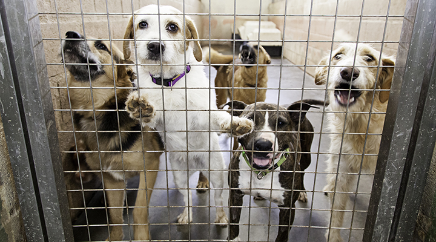

Seu melhor amigo precisa de ajuda

Há muitos cães abandonados nas ruas à espera de uma família acolhedora. Sensibilizados por essa realidade, um grupo de pessoas uniu esforços e fundou a ONG Melhor Amigo, uma entidade dedicada ao resgate, cuidado e encaminhamento desses companheiros de quatro patas para novos lares. Com recursos iniciais arrecadados pelos próprios fundadores e colaboradores, a ONG passou a oferecer aos animais condições dignas de vida, incluindo atendimento à saúde, cuidados de higiene, alimentação adequada e treinamento comportamental. Todo esse trabalho tem como objetivo preparar os cães para a convivência familiar, aumentando suas chances de adoção e de uma integração bem-sucedida em seu novo lar. Já no primeiro ano de atuação, a organização conseguiu encaminhar 15 cães para adoção. Com o passar do tempo, a entidade cresceu, ampliou sua estrutura e fortaleceu sua rede de apoiadores. Ao final do quarto ano, a média anual já alcançava 90 adoções bem-sucedidas. Atualmente, a ONG promove aproximadamente 120 adoções por ano, conectando cães a tutores responsáveis e ajudando a formar famílias ainda mais felizes. O compromisso da entidade permanece firme graças ao apoio de voluntários, parceiros e pessoas de bom coração que acreditam na causa animal e contribuem para transformar vidas.
Promover a união entre cães dóceis, saudáveis e bem preparados e famílias acolhedoras, fortalecendo uma parceria que acompanha a humanidade há milhares de anos. Nosso propósito é proporcionar bem-estar aos animais e alegria às famílias, criando lares repletos de afeto, responsabilidade e companheirismo.
Os resultados alcançados refletem o compromisso e a dedicação de todos os envolvidos na causa. Mais de 600 adoções responsáveis realizadas com sucesso; Centenas de cães resgatados, recuperados e reintegrados à convivência familiar; Crescimento contínuo do número de adoções a cada ano; Impacto positivo na vida de animais e famílias da comunidade. Trabalhamos diariamente para ampliar esses números e oferecer novas oportunidades a cada cão que chega à nossa instituição.
Você também pode fazer parte dessa transformação. Existem diversas formas de colaborar com a ONG Melhor Amigo e ajudar a mudar a vida de cães que aguardam uma nova chance. Você pode contribuir por meio de doações financeiras, doação de materiais e insumos, divulgação da causa ou atuação como voluntário em nossas atividades. Cada gesto de solidariedade ajuda a garantir mais resgates, mais cuidados e mais finais felizes. Junte-se a nós e faça a diferença na vida de quem mais precisa.
A ONG atua no resgate de cães que vivem em situação de abandono, vulnerabilidade ou sofrimento. Após serem acolhidos, os animais recebem proteção imediata, alimentação adequada e os cuidados necessários para iniciar sua recuperação física e emocional.
Cada cão passa por um processo de reabilitação e preparação para a adoção. Durante essa etapa, recebe acompanhamento de saúde, cuidados de higiene, alimentação de qualidade e treinamento comportamental, desenvolvendo confiança e habilidades para uma convivência harmoniosa em família.
Ao final dessa jornada, os cães são encaminhados para famílias cuidadosamente selecionadas e comprometidas com seu bem-estar. A adoção responsável garante que cada animal encontre um lar seguro, repleto de carinho, atenção e cuidados por toda a vida, proporcionando um recomeço feliz para cães e tutores.
Preencha seus dados para demonstrar interesse em apoiar a ONG Melhor Amigo.
Após o envio, nossa equipe entrará em contato em até 3 dias úteis para combinar a melhor forma de você colaborar.
Fechar